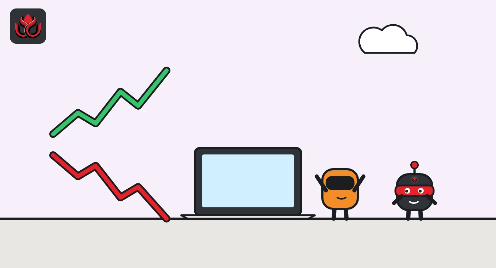
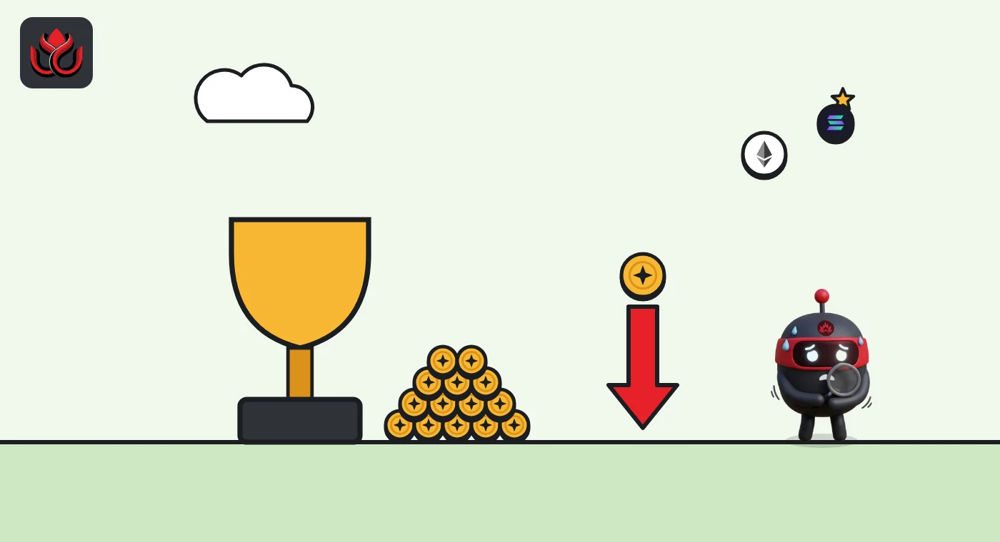

Pump.fun added Monad and TON and is pushing perps. So why is PUMP down 25% since October 12?
The Solana memecoin app now lets users trade Monad and TON tokens from one USDC balance and is pushing leveraged perps. Its PUMP token kept sliding, and daily revenue fell about 35% in 11 days.
Key points
- Pump.fun opened trading in Monad tokens on October 24, 2026, and TON tokens on October 27, all from one in-app USDC balance, and promoted perps on October 31.
- Its daily revenue fell from about $1.99 million on October 21 to about $1.29 million on November 1, DefiLlama shows.
- PUMP fell about 25% between October 12 and 26 and sat about 52% below its all-time high on November 2.
 What DeepSea's data shows
What DeepSea's data shows
Futures traders flipped on PUMP during the period covered here. In the week of October 12 to 18, DeepSea's weekly report shows the traders it tracks were net short, with $14.22 million of PUMP longs (37 wallets) against $35.81 million of shorts (47 wallets), and a net change of minus $56.08 million.
By November 2, DeepSea's live long/short page showed $67.33 million of PUMP longs against $3.62 million of shorts. The live page does not name an exchange; DeepSea's weekly reports say its perps data covers open Hyperliquid positions held by the traders it tracks, so the figures are probably from the same source but from different dates.

Data: DeepSea (desea.io), checked November 1, 2026, 11:09 p.m. ET.
Two new chains in three days
Pump.fun, the app known for launching Solana memecoins in seconds, opened trading in Monad tokens on October 24, 2026, and TON tokens on October 27, then promoted perpetual futures on October 31. Its PUMP token did not follow: it was about 25% lower on November 2 than on October 12, and daily revenue fell about 35% in 11 days. The company is trying to become a trading app that reaches several blockchains from one balance.
On October 24, Pump.fun said in a post on X that Monad was live in its app. Users can buy any Monad token straight from their USDC balance, with no manual bridging and no switching wallets, the company said. Monad is a newer layer-1 blockchain that is compatible with Ethereum's software.
Three days later, on October 27, Pump.fun said in another X post that TON was live too. TON is the blockchain linked to the Telegram messaging app. Pump.fun called its product the "fastest crosschain social app with the cheapest fees." That is the company's own claim, and it gave no figures to back it.
Why one balance matters
Moving money between blockchains is one of the most annoying parts of crypto for new users. It usually means using a bridge, a service that locks tokens on one chain and issues matching tokens on another, and then switching to a different wallet. Each step adds fees, waiting time and room for mistakes.
Pump.fun's pitch is that users keep one USDC balance in its app and use it to buy tokens on whichever chain they want. The app handles the cross-chain plumbing in the background. For a memecoin trader, that means a new token on Monad or TON is as easy to buy as one on Solana.
For Pump.fun, the benefit is that users and their money stay inside its app. Every trade there is a chance to earn a fee, whichever chain the token lives on.

Perps inside the app
The app now also offers perpetual futures, or perps. These are leveraged bets on an asset's price with no expiry date. On October 31, Pump.fun's main account posted "perps" alongside "social trading", and its ecosystem account highlighted a large perps trade made on the Pumpfun app the same day.
Perps generate fees on every trade. They also carry more risk for users, because leverage means positions can be wiped out by small price moves. Pump.fun has not published perps volume figures in the posts we reviewed.
Revenue fell about 35%
The new features came as Pump.fun's revenue cooled. DefiLlama, which tracks protocol revenue, shows Pump's daily revenue at about $1.99 million on October 21. By November 1 it was about $1.29 million. That is a drop of roughly 35% in 11 days.
For comparison, Hyperliquid, a decentralized perps exchange, also saw swings. DefiLlama data show its daily revenue ranged from about $1.23 million to $4.87 million over the same period. On October 31 and November 1, Pump's daily revenue was slightly higher than Hyperliquid's.
Averages smooth out the daily noise. By our calculation from DefiLlama's figures, Pump's daily revenue averaged about $1.72 million over the seven days from October 21 to 27 and about $1.54 million over the seven days from October 26 to November 1. Hyperliquid averaged about $2.02 million a day from October 21 to 27, so it stayed ahead over the week even on days when Pump came close.
Daily protocol revenue, Pump vs. Hyperliquid
US$ million
Source: DefiLlama daily revenue for Pump and Hyperliquid, as shown on November 2, 2026. Recent days can be revised.

The token did not follow
The product news did not lift the PUMP token. CoinGecko daily prices show PUMP at about $0.00562 on October 12 and about $0.00423 on October 26, a fall of roughly 25% in two weeks. It traded near $0.00422 on November 2, about 52% below its all-time high of about $0.00882, set on September 14, 2025.
PUMP bounced briefly to about $0.00513 on October 22, then fell back. The launches did not change the trend: it was near $0.00429 on October 24 and $0.00428 on October 27.
At about $0.00422, CoinGecko put PUMP's market value at roughly $1.94 billion on November 2. That figure moves with the token price and with the circulating supply CoinGecko tracks.
Hyperliquid's HYPE token has held up better. It set an all-time high of about $97.96 on September 23, 2026, and traded near $88 on November 2, CoinGecko shows.
Timeline
PUMP near $0.00562, per CoinGecko
Pump daily revenue about $1.99 million, per DefiLlama
Pump.fun says Monad is live in its app
PUMP near $0.00423, down about 25% in two weeks
Pump.fun says TON is live in its app
Pump.fun accounts promote perps trading in the app
Pump daily revenue about $1.29 million
LC Insight analysis
This section is our reading of the facts above, not a statement of fact.
- We think Pump.fun wants to be a general retail trading app, not just a Solana launchpad. One USDC balance across chains, plus perps, keeps users and their money in one place, which is where the fees are.
- The revenue line is the signal that matters. New chains add choice, but they do not bring back the memecoin frenzy that made Pump.fun's name.
- PUMP's slide shows that product launches and token price are not tied together. Holders win only if revenue grows and flows back to the token, and neither is guaranteed. This is not investment advice.
What's next
- Which chain Pump.fun adds next; it has not said
- Any published perps volume from the app
- Pump's daily revenue on DefiLlama
Disclaimer. This article is based on public information and the sources listed below as of the update time shown. It is for information only and is not investment, legal or tax advice. Figures may change as companies and authorities publish new data.
Sources
- Pump.fun on X, Monad live in the app (October 24, 2026)
- Pump.fun on X, TON live in the app (October 27, 2026)
- Pump.fun on X, perps and social trading (October 31, 2026)
- DefiLlama, Pump protocol revenue
- DefiLlama, Hyperliquid protocol revenue
- CoinGecko, Pump.fun (PUMP) price data
- CoinGecko, Hyperliquid (HYPE) price data